Delphin2 Actuator and Extra Drag
한 줄로
Delphin2 구동기 힘에는 속도가 들어간다. 핀은 저속에서, 터널 쓰러스터는 고속에서 힘을 잃고, 기본
D(ν)가 못 잡는 저항(스러스터 제트, 수면 조파)은 Extra Drag 블록이 조건부로 더한다.
출처: 제어공학특론 2. 동역학 모델 (Dynamic Model Simulation) p37–39, p45–47 / 4. AUV 제어기 설계 Part 2 p33–38 / Tanakitkorn (2017) 1.3절, 3.5절 (C:\Archive\AUV\제어공학특론\PDF\참고논문\Tanakitkorn_2017_PhD_AUV_GNC.pdf)
어디에 앉는가 — 6-DOF Marine Craft Model 의 τ 칸과 Hydrodynamic and Restoring Forces 의 D(ν) 보정
손풀이 원본은 랩미팅 2026-10-23 · 2026-10-30 weekly 에 있음
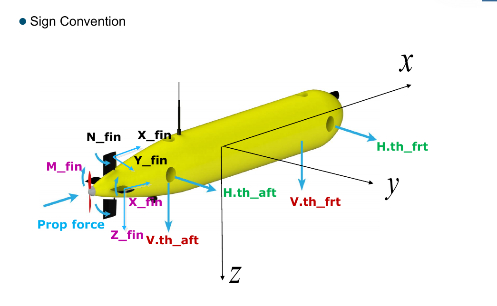
Delphin2 구동기 배치와 부호 규약: 선미 프로펠러 1, 러더·스턴 핀, 터널 쓰러스터 4 (수평 앞·뒤, 수직 앞·뒤)
핀(러더·스턴) 힘
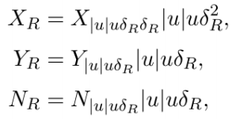
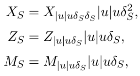
- 핀 힘은 각도 δ에 비례하고, 그 힘이 핀과 함께 δ만큼 기울어 일부가 뒤를 향함 → 옆힘(Y·Z)엔 δ 한 번, 항력(X)엔 δ 두 번 곱해짐
- 러더·스턴 힘엔
u항이 있어 surge 속도에 비례함 → 전진속도가 없으면 힘을 못 만듦 - 그래서 저속에선 러더·스턴만으로 자세제어가 힘듦 → 터널 쓰러스터가 필요한 이유
항력 X_R 을 계수 · 속도 · 각도로 쪼개 읽기
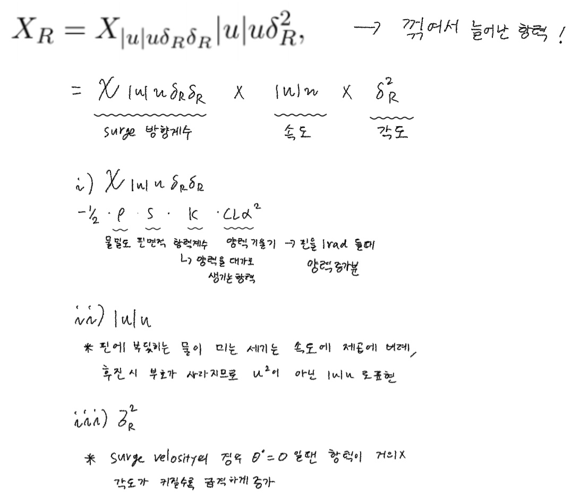
X_R = X_|u|uδRδR · |u|u · δR²→ 꺾여서 늘어난 항력- 계수
X_|u|uδRδR ≈ −½·ρ·S·K·C_Lα²: 물밀도, 핀 면적, 항력계수(양력을 대가로 생기는 항력), 양력 기울기(핀을 1 rad 돌렸을 때 양력 증가분) |u|u: 핀에 부딪히는 물이 미는 세기는 속도의 제곱에 비례.u²로 쓰면 후진할 때 부호가 사라져서|u|u로 씀δR²: 각도가 0이면 항력이 거의 없고, 각도가 커질수록 급격하게 증가
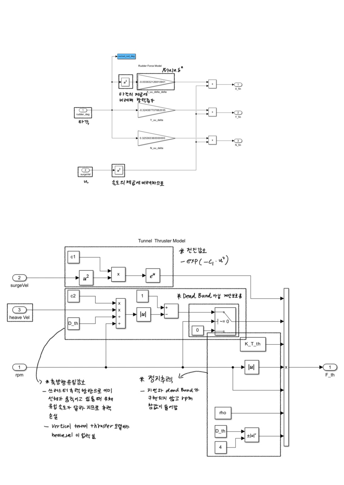
Simulink 러더 블록(위)과 터널 쓰러스터 블록(아래)에 손으로 단 분석
- Simulink 러더 블록: 항력 X는 타각의 제곱, 모든 힘은
u²에 비례하도록 구현돼 있음
프로펠러 추력에 속도가 들어가는 이유
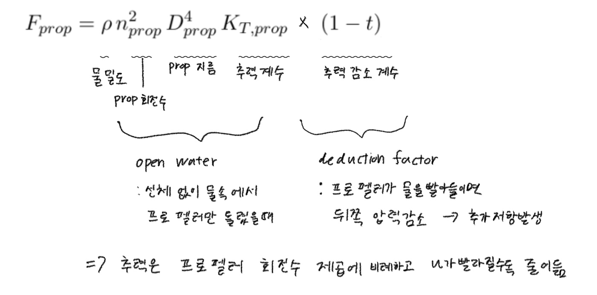
T = ρD⁴·K_T(J)·|n|n, 전진비J = Va/(nD),Va = (1−w)u- 식은 두 덩어리:
ρn²D⁴K_T는 open water 추력(선체 없이 물속에서 프로펠러만 돌렸을 때),(1 − t)는 추력감소계수(deduction factor). 프로펠러가 물을 빨아들이면 선체 뒤쪽 압력이 떨어져 추가 저항이 생기는 몫 - 같은 rpm이라도 빨라지면 물이 이미 들어오고 있어 받음각이 줄고 K_T가 떨어짐 → 추력 감소
Simulink 프로펠러 블록을 따라가며 읽은 것
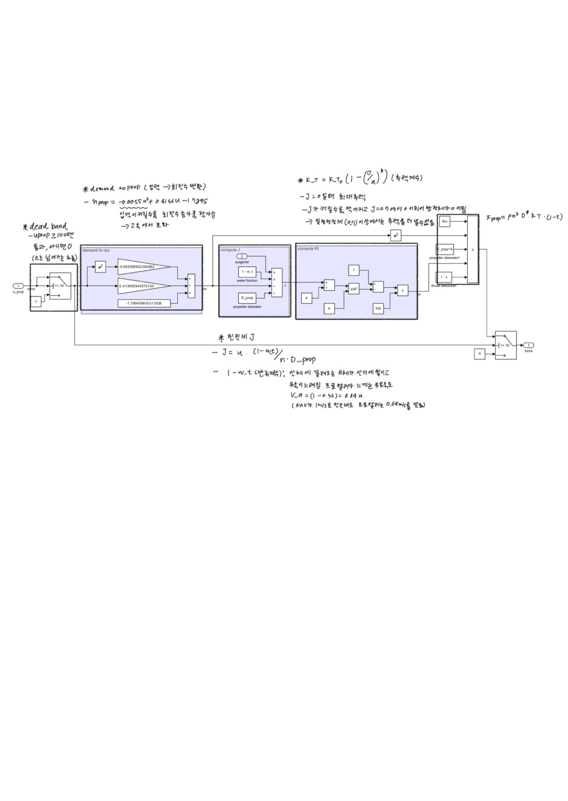
- deadband:
u_prop ≥ 10일 때만 통과, 아니면 0 - demand → rpm:
n_prop = −0.0055·u² + 0.4165·u − 1.7895. 입력이 커질수록 회전수 증가분이 작아짐 - 전진비:
J = u·(1 − w_t) / (n·D_prop), 반류계수w_t = 0.36→ 프로펠러로 들어가는 유속은V_a = 0.64·u(선체가 물을 끌고 다녀서 AUV가 1 m/s로 가도 프로펠러는 0.64 m/s로 느낌) - 추력계수:
K_T = K_T0·(1 − (J/a)^b). J = 0일 때 최대, J가 커질수록 작아지고J = a (= 0.7)에서 0. 전진비가 a 이상이면 추력을 더 못 냄 - 출력:
F_prop = ρ·n²·D⁴·K_T·(1 − t) - 추력은 u↑에 따라 줄고 항력은 u|u|로 커져 속도가 스스로 수렴함
- 비교: ROS2 USV 텀프로젝트는 속도와 무관한 고정
base_thrust+ surge 속도 제어기 없음 → 전진속도 계속 증가, speed governor로 잘라야 했음 → ROS2 USV Term Project
u_prop / n_prop (u_th / n_th)
- 이 강의 표기에서
u= 명령값(demand),n= 실제 회전수 - Tanakitkorn 1.3절:
u_prop = {0, 10, 16, 22}는 모터 보드 setpoint, 수중 약u = {0, 0.26, 0.6, 1.0} m/s - 터널 스러스터:
u_th ∈ [−2500, −150] ∪ [150, 2500]가 rpm과 거의 1:1, ±150은 deadband
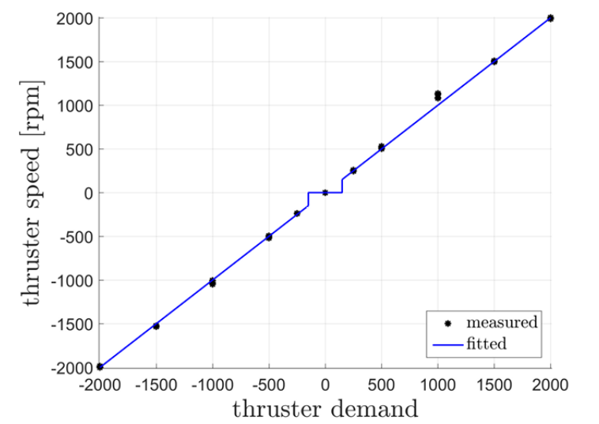
터널 쓰러스터 demand vs rpm: 0 근처 평평한 구간이 deadband
- 처음엔 u_prop을 유입속도 Va로 잘못 설명했었음 → 강의 슬라이드로 정정
터널 스러스터 모델 (p37–38)
F_th = ρ|n_th|n_th D_th⁴ K_T,th · e^(−c_th,1·u²) · [1 − c_th,2·(v/(n_th D_th))]
└── static thrust ──┘ └──── 운동에 의한 deduction factor ────┘
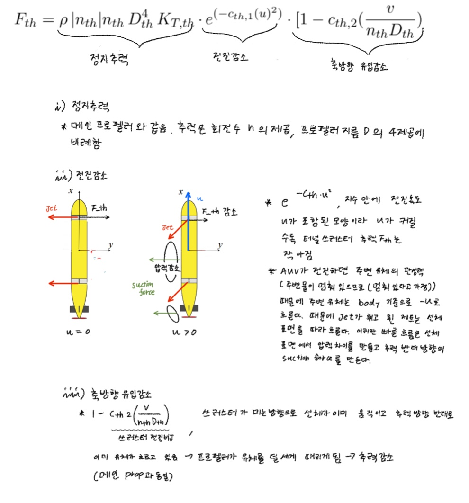
- 정지추력
ρ|n|n D⁴ K_T: 메인 프로펠러와 같음. 회전수의 제곱, 지름의 4제곱에 비례 - 전진감소
e^(−c·u²): AUV가 전진하면 주변 유체가 body 기준 −u로 흐름 → 터널에서 나온 제트가 휘고, 휜 제트가 선체 표면을 따라 흐름. 이 빠른 흐름이 선체 표면에 압력 차이를 만들어 추력 반대 방향의 suction force가 생김 → 핀과 정반대로 고속에서 힘을 잃음 - 축방향 유입감소
[1 − c·v/(nD)]: 쓰러스터가 미는 방향으로 선체가 이미 움직이고 있으면 프로펠러가 물을 덜 세게 때리게 됨 (메인 프로펠러 전진비와 같은 원리). Simulink에선 수직 스러스터에 heave, 수평에 sway 속도가 들어감 - Simulink 블록(위 러더 그림의 아래쪽): 정지추력엔 지연·deadband가 구현돼 있지 않고 rpm 참값이 바로 들어감.
~= 0스위치는 deadband가 아니라 0 나누기 보호용 - 계수는 Palmer (2009)
속도마다 제어 게인이 달라지는 이유 (Part 2 p35–38)
- VTT 피치 제어, 같은 구조(바깥 PI + 안쪽 q 게인
Kd = 12000) - U = 1 m/s:
C1 = 0.8(s+0.5)/s, GM 13.6 dB, PM 63.1° - Hover:
C1 = 0.4(s+0.5)/s, GM 11.6 dB, PM 74.1° → 오버슈트 거의 없고 조금 느림 - hover에선
e^(−c·u²) = 1이라 VTT가 추력을 다 냄 → 게인 절반으로 충분. trim 데이터를 속도별로 따로 불러와 튜닝함 (gain scheduling의 출발점)
구동기 지연 모델 차수 (p45, p47)
| 차수 | 식 | 반영하는 것 | 최대 위상 지연 |
|---|---|---|---|
| 1차 | 1/(τs+1) | 바로 움직이기 시작, 오버슈트 없음 | −90° |
| 2차 | ωn²/(s²+2ζωn s+ωn²) | 서보·핀 관성, S자 출발, ζ<1이면 출렁임 | −180° |
| 3차 | 2차 × 1차 등 | 모터 전류(인덕턴스), 센서 필터, 시간지연 Padé 근사 | −270° |
- 강의는 1차만 씀: 러더·스턴
1/(0.3s+1), 스러스터ṅ = K_u·u − K_n·n - p47: τ = 0.3 vs 10 → τ가 크면 r 응답이 늦고 크기도 절반
- 실무에선 고차 선형 모델보다 1차 + 각도 포화 + rate limit 을 많이 씀
Extra Drag (p39)
출처: 강의 2강 p39(블록), p42(Force Projection), p49(검증) / Tanakitkorn (2017) 3.5 Correction Terms p61–64(PDF p93–96), 검증 3.9.1 p74. 강의 슬라이드는 이 논문을 그대로 옮긴 것(계수 일치). 슬라이드 하단 출처는 Fossen TTK4190 강의노트지만 Extra Drag는 Fossen(2011) 모델에 없던 걸 논문이 추가한 부분
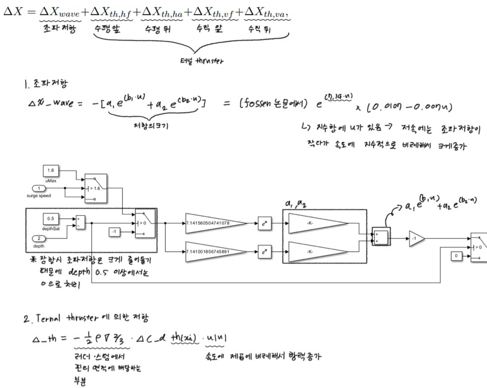
손풀이: Extra Drag 전체 식, 조파저항 블록 분석, 쓰러스터 jet 항력 식
ΔX = ΔX_wave + ΔX_th,hf + ΔX_th,ha + ΔX_th,vf + ΔX_th,va
조파저항 수평 앞 수평 뒤 수직 앞 수직 뒤 (터널 쓰러스터)
- surge(X)에만 작용 (논문 식 3.32의 보정 벡터
[ΔX, 0, 0]ᵀ). p42 Force Projection에서X = prop + X_fin_rud + X_fin_stern + extra_Drag - 두 피팅식(3.29, 3.30)은 논문에 숫자 계수로만 나옴. 기호 일반형은 없음. 꼴은 둘 다
a₁e^(b₁x) + a₂e^(b₂x)(논문 표현 “second order exponential”, MATLABexp2와 같은 꼴) - 계수는 물리 상수가 아니라 곡선 모양을 맞춘 숫자 → 하나하나에 의미를 붙이기 어렵고, 피팅 범위 밖에선 믿으면 안 됨
1. 조파저항 ΔX_wave (논문 3.5.1, 식 3.29)
ΔX_wave = −𝟙(depth < 0.5) · [ a₁e^(b₁u) + a₂e^(b₂u) ]
a₁ = −12.353, b₁ = 7.1416, a₂ = 12.363, b₂ = 7.1410
≈ −𝟙(depth < 0.5) · e^(7.14u) · (0.0107 − 0.0069u)
- 두 항은 각각 수만 N인데 거의 상쇄되고 차이만 남음 (u = 1: −15,606 + 15,611 = 4.7 N) → 항 하나하나는 의미 없음
- 아랫줄 근사식은 논문에 있는 게 아니라 계수가 거의 같다는 점(a₁ ≈ −a₂, b₁ ≈ b₂)을 이용해 정리한 것
e^(7.14u): 지수에 u가 있음 → 저속에서는 조파저항이 작다가 속도에 따라 급격히 증가. 파도 길이λ = 2πu²/g가 속도 제곱에 비례 (Delphin2 길이 1.96 m 기준 0.5 m/s에서 0.16 m, 1.3 m/s에서 1.08 m) → 빨라질수록 파도가 길고 높아져 가져가는 에너지가 커짐. 7.14라는 숫자 자체엔 의미 없음0.0107: 수면(z = 0)에서 이 AUV의 전체 크기 배율−0.0069u: 피팅이 남긴 흔적, 물리 의미 없음. u ≈ 1.55 m/s에서 0, 그 위로는 음수- 바깥
−: 저항 크기(양수)를 진행 반대 방향 힘으로 바꿈 depth < 0.5스위치: 잠항 시 조파저항은 크게 줄어들기 때문에 depth 0.5 이상에서는 0으로 처리. 직관용 근사로 파도 에너지는 깊이 h에서 약e^(−2kh)(k = g/u²)만큼 줄어듦 → u = 1 m/s, h = 0.25 m에서 0.7% (논문 Fig 3.10에서 z = 0.25, 0.5 m 점이 0에 붙어 있는 이유). 이 감쇠식은 논문 식이 아니라 설명용
블록 (Extra Drags/drag due to wave)
| 순서 | 블록 | 하는 일 |
|---|---|---|
| 1 | Switch3 + uMax(1.6) | u > 1.6이면 1.6 |
| 2 | Add1 | depthSat(0.5) − depth (슬라이드엔 이름이 depthSet) |
| 3 | Switch1 | 얕으면 u_sat, 깊으면 −1 (어차피 Switch2가 0으로 막아서 결과엔 영향 없음) |
| 4–5 | Gain1/3 → e^u → Gain2/4 | a₁e^(b₁u), a₂e^(b₂u) 따로 계산 |
| 6 | Add13 | 두 항을 더함 → 여기서 상쇄되고 저항 크기만 남음 |
| 7 | K_u2(−1) | 진행 반대 방향 |
| 8 | Switch2 | 깊으면 0 |
depth입력은 시뮬레이션 중 실제 수심이 아니라 상위Constant1의 워크스페이스 변수depth→ 실행 전에 수면(0)/잠항(2) 조건을 정함 (p49 “@depth=0 and @depth=2m”)- 흘려보기: 수면 u = 1 → −4.74 N / depth = 2 → 0 N / 수면 u = 2 → uMax로 1.6 → +35.9 N (앞으로 미는 힘)
- ⚠️ 논문 피팅 범위는 0–1.3 m/s인데
uMax가 1.6이라 포화 지점에서 이미 부호가 뒤집힌 상태. 1.3으로 낮춰야 맞음 (수업 범위 속도에선 문제 없음)
2. 터널 쓰러스터 jet 항력 ΔX_th,i (논문 3.5.2, 식 3.30–3.31)
ΔX_th,i = −𝟙(nᵢ ≠ 0) · ½ρ∇^(2/3) · ΔC_d,th(xᵢ) · u|u|
xᵢ = u / u_j,i
u_j = √(4F_th/(ρπD_th²)), 모델에선 F_th = K_T′n² -> u_j = (2|n|/D_th)·√(K_T′/(ρπ))
ΔC_d,th(x) = 0.566·e^(−7.61x) + 0.0565·e^(−0.897x) (Palmer 2009 실험 피팅, Fig 3.12)
숫자 대입: ½ρ∇^(2/3) = 92.8, u_j ≈ 0.000896·|n| [m/s]
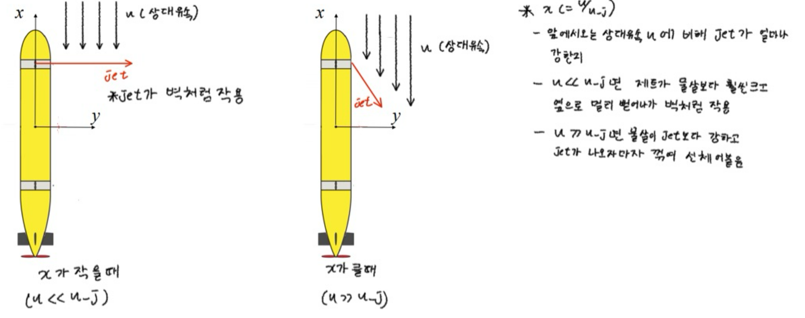
손그림: x가 작을 때(jet이 벽처럼 작용) vs x가 클 때(jet이 꺾여 선체에 붙음)
- 일반 항력식
−½ρA·C_d·u|u|과 같은 꼴에서 A와 C_d만 바뀜 → 쓰러스터를 켜면 항력계수가 ΔC_d만큼 커진 것 (몸통이 뚱뚱해진 효과) ½ρ∇^(2/3): 일반 항력식의½ρA자리. 러더·스턴 식에서 핀 면적 S가 들어가던 자리와 같은 역할이지만, 여기선 핀이 아니라 선체 전체의 기준 면적(배수량 체적^(2/3) = 0.186 m²)u|u|: 속도의 제곱에 비례해서 항력 증가, 후진해도 부호 유지x = u/u_j: 앞에서 오는 상대유속 u에 비해 jet이 얼마나 강한지- u ≪ u_j (x 작음): jet이 물살보다 훨씬 세고 옆으로 멀리 뻗어나가 벽처럼 작용
- u ≫ u_j (x 큼): 물살이 jet보다 강하고 jet이 나오자마자 꺾여 선체에 붙음
- 바람 부는 날 옆으로 뿌린 호스 물줄기와 같음 (jet in crossflow)
- ΔC_d 두 항:
0.566e^(−7.61x)는 크게 시작해 빨리 사라지는 센 jet 구간,0.0565e^(−0.897x)는 작게 남는 꼬리. 조파저항과 달리 둘 다 양수라 상쇄 없음, 범위 밖에서도 0으로 부드럽게 줄어듦 - 𝟙(n ≠ 0): 쓰러스터 꺼지면 jet 없음
크기 감 (쓰러스터 1개당, N)
| u = 0.2 | 0.5 | 1.0 | 1.3 m/s | |
|---|---|---|---|---|
| 500 rpm | −0.21 | −0.48 | −0.71 | −0.66 |
| 1000 rpm | −0.56 | −0.98 | −1.94 | −2.42 |
| 2500 rpm | −1.26 | −3.48 | −5.28 | −6.34 |
- 선체 기본 항력
X_uu = −6.49(Delphin2.m) → u = 1에서 약 −6.5 N. 쓰러스터 4개를 2500 rpm으로 다 돌리면 jet 항력만 약 −21 N, 기본 항력의 3배 이상 → 고속에선 쓰러스터보다 핀이 유리
블록 (Extra Drags/drag due to V. front thruster jet:, 나머지 3개는 복사본)
| 블록 | 하는 일 |
|---|---|
Compare To Zero | rpm ≠ 0 판정 |
Switch1 | 꺼져 있으면 rpm 대신 −1 (u_j = 0 → x = u/0 방지) |
thruster speed to jet speed | K_u3(×2) → Divide2(÷D_th) × Sqrt(K_T′/(ρπ)) → Abs2 → u_j |
Subsystem | Divide1(u/u_j) → 두 경로 Gain→e^x→Gain → Add13 → ΔC_d |
K_u1(−0.5) → K_u(ρ), Math Function(V_AUV^(2/3)) | −½ρ∇^(2/3) |
Abs1 → Product3 | u|u| |
Switch2 | 꺼져 있으면 0 |
- 블록 이름
K_u,K_T_prime1~4는 복사 흔적, 실제 값은 ρ, −0.5, −1, 2/3, V_AUV, 0 Abs2때문에 rpm이 음수(반대쪽 분사)여도 u_j는 양수 → 방향과 무관하게 벽은 생김 (맞는 처리)- 흘려보기: u = 1, 2500 rpm → u_j = 2.240, x = 0.446, ΔC_d = 0.0190 + 0.0379 = 0.0568, 출력 −5.28 N
- ⚠️ 모델은 F_th를 정지추력 K_T′n²만으로 계산. 논문은 식 3.19(
e^(−cu²)전진감소 포함)를 쓴다고 했지만 구현에선 두 효과가 연결돼 있지 않음 → u_j가 실제보다 조금 크게 잡힘 - ⚠️
Divide1이 부호 있는 u를 씀 → 후진(u < 0)이면 x < 0이 돼 지수가 커짐. u = −0.5, 2500 rpm에서 ΔC_d = 3.16, +73 N. Fig 3.12 데이터는 x > 0뿐이라 범위 밖. 감속 중 잠깐 u ≈ −0.05 정도면 0.17 N이라 무해. 고치려면Divide1앞에Abs
터널 쓰러스터 한 현상, 두 손해
| 추력 감소 (p37–38) | jet 항력 (p39) | |
|---|---|---|
| 바뀌는 것 | 쓰러스터 추력 F_th | 선체 surge 항력 |
| 식 | e^(−c·u²) | −½ρ∇^(2/3)·ΔC_d·u|u| |
| 원인 | 전진 유동에 jet이 휘고 suction force | jet이 앞 유동을 막는 벽 |
| 작용 | sway·heave·yaw·pitch 제어력 | X만 |
| 논문 | 3.4.2 (식 3.19) | 3.5.2 (식 3.30–3.31) |
→ 고속에서 쓰러스터를 쓰면 추력 손실 + 저항 증가로 두 배 손해
이 파일(Delphin_Model2_Full.slx)에선 꺼져 있음
- 루트
Constant2 = 0이 쓰러스터 rpm 4개 입력 → jet 항력 항상 0 - 루트
Extra Drags출력 →Gain2 = 0→Add4→ Extra Drag 전체가 0.Gain2가 p49의extra_Drag = 0/1스위치 역할 - 확인하려면
Gain2 = 1,Constant2 = 2500,depth = 0으로 바꾸고 출력에 Display (u ≈ 1에서 쓰러스터 1개당 약 −5.3 N이면 맞음)
조파저항을 이해한 흐름
- 잔잔한 바다여도 생김. 바다의 파도가 아니라 AUV가 스스로 만드는 파도 때문
- 파도가 생기려면 자유 수면 + 중력 복원이 필요 → 깊은 물속엔 수면이 없어 파도가 안 생김. 물을 밀고 유동을 만드는 건 똑같지만 교란이 몸 주변에만 머물다 닫힘
- 압력저항이 0이 된다는 말 (d’Alembert): 앞은 막혀서 압력↑(뒤로 밂), 옆구리는 빨라져 압력↓, 뒤는 다시 모이며 압력↑(앞으로 밂). 점성이 없으면 앞뒤가 상쇄됨. 실제론 점성 때문에 뒤쪽에서 박리 → 압력 회복이 덜 돼 형상저항이 남음
- 수면 근처에선 몸 위의 수면 굴곡이 AUV와 같이 따라다님. 이 굴곡과 뒤로 남는 물결은 같은 하나의 파도 덩어리임 (원인-결과가 아님)
- 파도가 뒤로만 퍼지니 굴곡이 앞뒤 비대칭 → 뒤에서 압력을 덜 돌려받음 → 그 차이가 조파저항. 파도는 부수 현상이 아니라 저항 그 자체
- 힘으로 보면 지금 몸에 걸린 앞뒤 압력 비대칭, 에너지로 보면 뒤에 남은 파도 에너지 = 추진기가 한 일. 같은 걸 두 방향에서 본 것
- 수면 근처에선 위쪽 유속이 빨라 수면 쪽으로 빨려 올라가는 suction force도 생김 (강의 모델엔 없음)
확인할 것
-
Extra Drags블록 스위치 방향과 조파저항 피팅 곡선을 Simulink 파일에서 직접 확인 (11-03, 위 블록 표. 조파 uMax 1.6 부호 뒤집힘, jet 후진 시 과대 발견) -
Gain2 = 1로 켜고 p49 surge 검증(extra_Drag0 vs 1) 직접 돌려보기 - 터널 스러스터
[1 − c·v/(nD)]항의 v가 수직 스러스터에서 heave로 들어가는지 블록 연결 재확인 (10-30 Simulink 손 분석에서 확인)